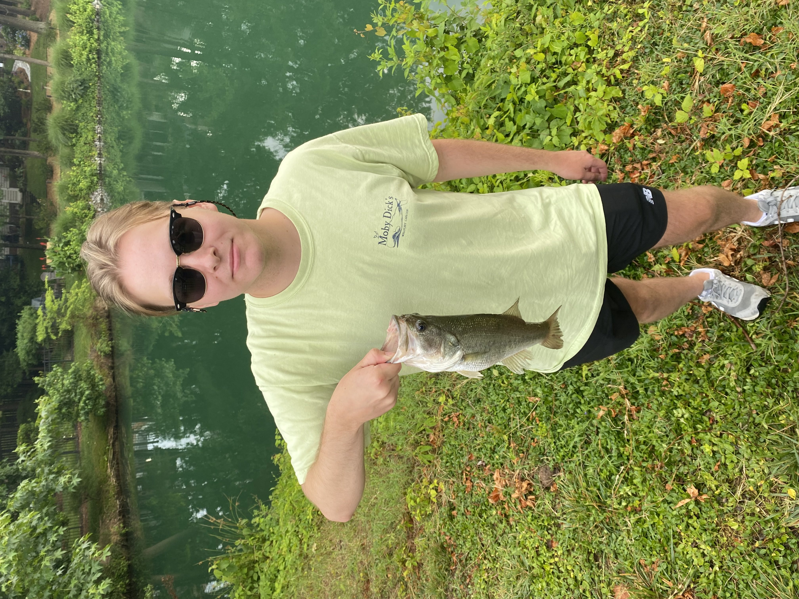

Alexander Karendys' Adventurous Kangaroo || ITIS 3135
Introduction

Love me some bass fishin.
Personal Background: I was born in Colorado Springs, Colorado but raised in Charlotte, NC since I was 3 years old.
Professional Background: I worked as a pizza delivery driver.
Academic Background: I graduated from Ardrey Kell High School and I am a junior at UNCC.
Background in this Subject: I don’t have any experience in html or web design.
rimary Computer Platform:P MacOS and Windows.
Courses I'm Taking & Why:
ITSC 3146 - Intro Oper Syst & Networking: Exploring the fundamental concepts of computer operating systems and network interactions in order to gain insight into the way computers collaborate and operate in unison.
ITIS 3135 - Web-Based Application Design and Development: Exploring the art of crafting dynamic web applications while mastering skills in both frontend and backend development.
LBST 2214 - Health and Quality of life: Needed one more LBST credit.
METR 1102 - Introduction to Meteorology: I needed an elective.
ITSC 2181 - Introduction to Computer Systems: This is a required class for my concentration.
Funny/Interesting Item to Remember me by: I have never broken a bone.
I'd also like to Share: I’m excited to learn more about web design and development.